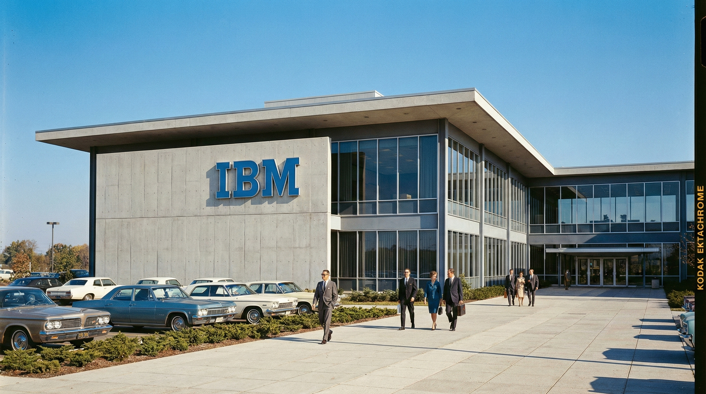

Office Equipment Division
This division designs and supports typewriters, dictation products, and related tools used in offices of all sizes. The Selectric is one of its most widely recognized products.
A company recognized for advancing office equipment and business technology around the world.

IBM develops and manufactures systems that help organizations process and manage information. From punched-card machinery to electronic computers and office equipment, the company focuses on reliability and long-term support.
This division designs and supports typewriters, dictation products, and related tools used in offices of all sizes. The Selectric is one of its most widely recognized products.
Manufacturing standards emphasize precision and durability. Equipment is built to withstand years of continuous use while maintaining consistent performance.
Armonk, New York, United States. Additional regional offices support customers in major business centers worldwide.
Before the Selectric, IBM supplied mechanical typewriters and tabulating equipment to businesses, helping standardize office documentation.
Parallel work on computing systems and data processing prepared organizations for the shift to automated information handling.
Service networks ensure customers can rely on IBM equipment for many years after installation.